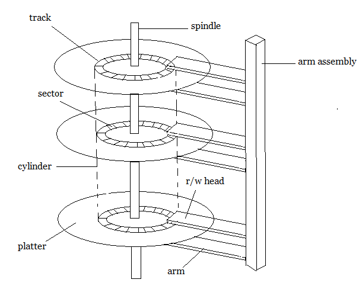

previous
Disk Management is a utility built into different operating systems which can be used to create, delete, format partitions, assign drive letters, and much more. Disk Management can also be used to view partitions and their formatted file systems on the hard drive.
read more...

The traditional head-sector-cylinder, HSC numbers are mapped to linear block addresses by numbering the first sector on the first head on the outermost track as sector 0. Numbering proceeds with the rest of the sectors on that same track, and then the rest of the tracks on the same cylinder before proceeding through the rest of the cylinders to the center of the disk. In modern practice these linear block addresses are used in place of the HSC numbers for a variety of reasons.
Disk scheduling is is done by operating systems to schedule I/O requests arriving for disk. Disk scheduling is also known as I/O scheduling. Disk scheduling is important because: Multiple I/O requests may arrive by different processes and only one I/O request can be served at a time by disk controller.
In operating systems, seek time is very important. Since all device requests are linked in queues, the seek time is increased causing the system to slow down. Disk Scheduling Algorithms are used to reduce the total seek time of any request.
Storage disks have not infinite life, tough tracking how many read/writes happened, operating temperature and noise produced, it is possible to guess how much time is left to the hard disk, and that is the disk reliability.
read more...
previous